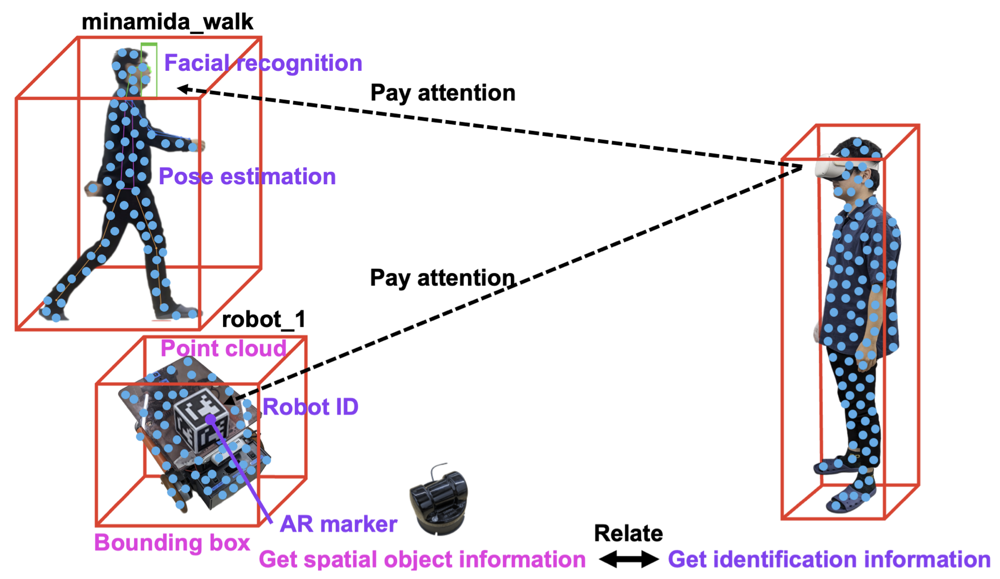
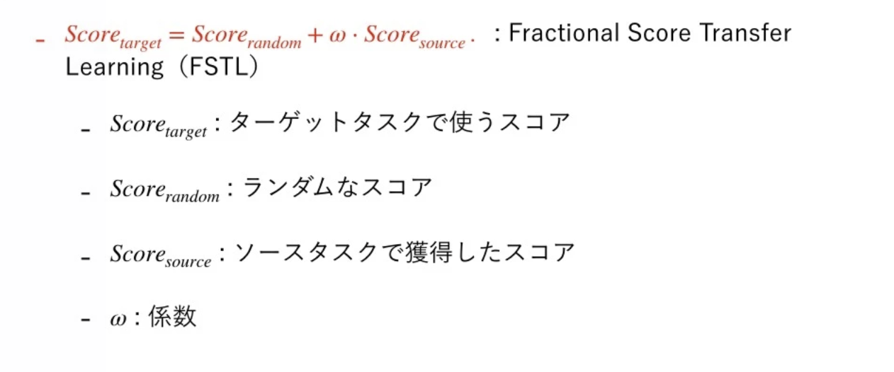
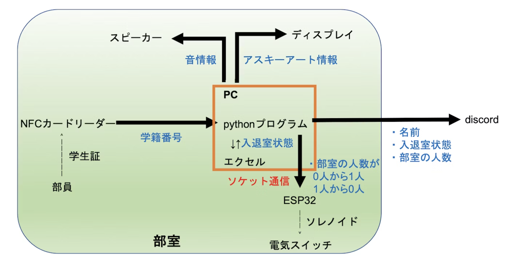
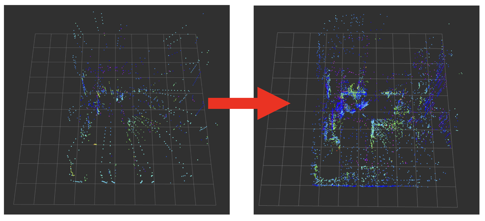
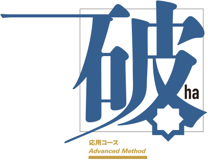
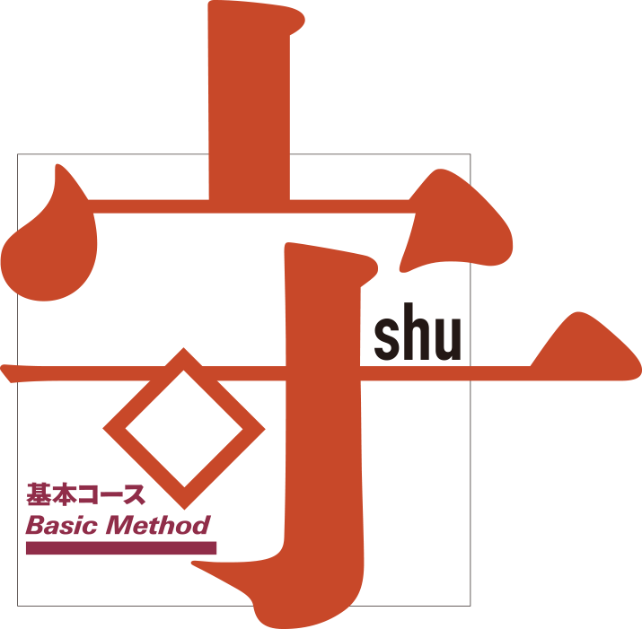

About Me
I am passionate about pioneering new ways for humans to interact with robots and real-world objects, aiming to expand human freedom and editing capabilities. My current research focuses on developing effective methods to process and utilize real-world information to achieve these interactions.
Interests
Education
Research Projects

Recertif
A system that shows the robot's work status simply by directing attention to the robot.

Other Projects

Access control system with student ID card
When a student comes to the club room and touches his/her student ID card, he/she is notified and the lights in the room come on automatically.

TURTLEBOT3 Waffle Pi Posture Manipulation
I created an interface on ROS 2 to control TURTLEBOT3 by estimating its posture with a camera.

Enabling the Use of Unitree L1 LiDAR without rviz
I have developed a method to use the Unitree L1 LiDAR without relying on rviz.(on ROS)
Experience

October, 2023 - February, 2024：51[ha]Editing instructor
51[ha]my class planning award
ISIS editing school
51[ha]my class name 51[ha]commemorative completion book51[ha]my class planning award

May, 2023 - August, 2023：51[shu]Editing instructor
51[shu]my class report
ISIS editing school
51[shu]my class name 51[shu]commemorative completion book51[shu]my class report